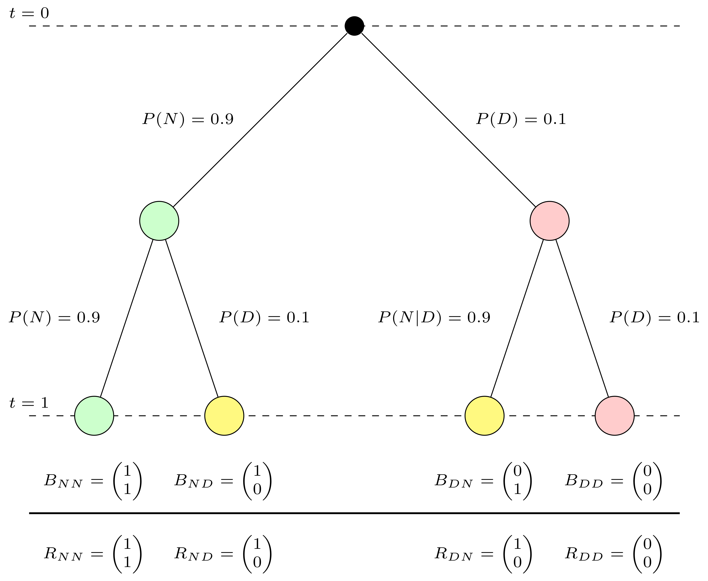
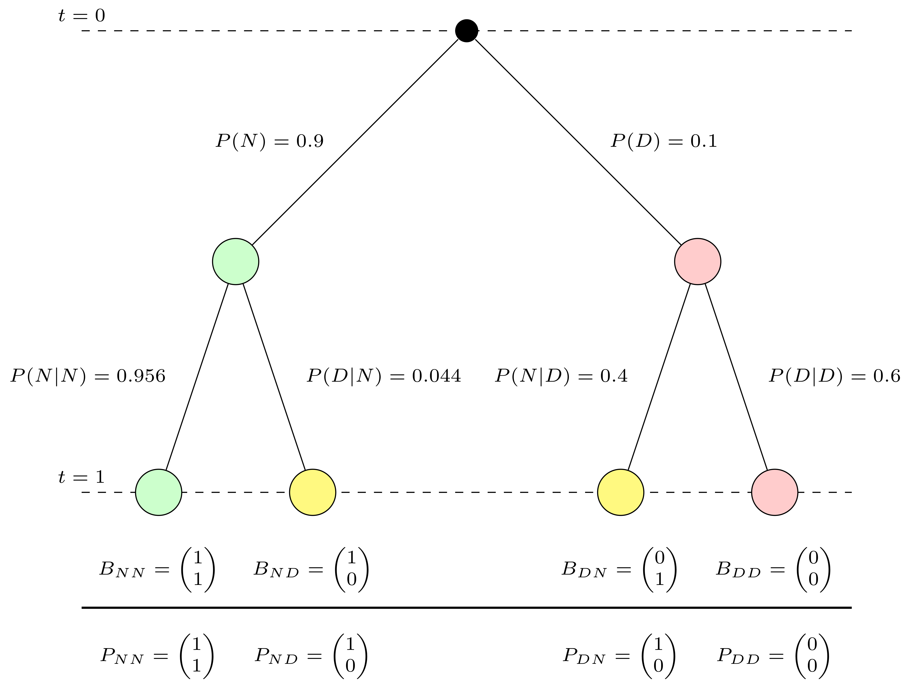

3 Conditional Probability
In this lecture we are going to discuss the concept of conditional probability. The notion of conditional probability is a basic tool of probability theory which has particular relevance in Finance. The ideas of conditional probability are very simple but often obscured by a clumsy terminology.
To intuitively appreciate the significance of conditional probability first, let us start with a simple but striking scenario from the world of finance. Imagine you are an investor trying to evaluate the safety of a bond portfolio. On paper, the bonds are rated highly by reputable agencies, and the portfolio looks diversified—a dream investment. However, during a global recession, a few defaults occur, and to your surprise, the entire portfolio begins to unravel, causing significant losses. How could this happen?
This seemingly safe portfolio turned risky because it underestimated the connections between events—a core idea tied to conditional probability. Conditional probability helps us analyze how the risk of one event changes given another has occurred. It enables us to model dependencies, a critical factor in real-world scenarios, particularly during financial crises.
Understanding these relationships isn’t just an intellectual exercise—it’s crucial for preventing catastrophic losses. Whether you’re pricing complex financial instruments, assessing credit risk, or making investment decisions, mastering conditional probability allows you to account for interconnected risks and avoid misleading conclusions based on oversimplified assumptions.
3.1 Why neglecting conditional probability may be expensive: A case study.
With this motivation in mind let us turn to a historical example that demonstrates the importance of understanding conditional probability: the financial crisis of 2007-2008. This crisis revealed how wrong assumptions about independence and neglect of dependence in events and conditional probabilities can lead to systemic failures in structured finance.1
1 See Tooze (2018): For an engaging and comprehensive exploration of the great financial crisis of 2007 - 2008 and its causes and aftermath. It is highly recommended for deeper study.
To understand the real world aspects of this example it is necessarry to understand some basic ideas of structured finance and the engineering of specific risk profiles from a portfolio of risky securities in the first place. I will explain the finance context with a simple and stylized example and then discuss how understanding conditional probability may help us to make better financial decisions.
3.1.1 Bonds and Credit Risk
A bond is a financial instrument where the issuer agrees to pay the holder a specific amount, the face value or par value, at maturity. Bonds are widely used as fixed-income securities but carry the risk of default if the issuer faces financial difficulties.
To quantify this risk, bonds are rated by agencies such as Moody’s and Standard & Poor’s. Investment-grade bonds are considered low-risk, while speculative or “junk” bonds are riskier and more likely to default. Here is a summary of their rating schemes and what the ratings mean in words:
| Rating Category | Moody’s | Standard & Poor’s |
|---|---|---|
| High grade | Aaa | AAA |
| Aa | AA | |
| Medium grade | A | A |
| Baa | BBB | |
| Speculative grade | Ba | BB |
| B | B | |
| Default danger | Caa | CCC |
| Ca | CC | |
| C | C | |
| D |
3.1.2 Pooling and Tranching: The Innovation
Structured finance emerged in the early 2000s as a way to manage risk through pooling and tranching. By pooling risky assets and dividing cash flows into “tranches” with distinct risk profiles, financial engineers created new bonds, including investment-grade securities, from portfolios of bonds which individually would be rated as speculative grade or junk bonds. A major product of this innovation was the mortgage-backed security (MBS). Many other products were then invented using similar financial engineering ideas.
Let us develop an intuitive understanding of structured finance and its relation to probability through a simplified example, which I learned from Karl Schmedder’s course.2
2 See https://www.coursera.org/learn/introductiontoprobability
3.1.3 A Simple Event Tree for One Bond
Consider a single bond you can own today that pays €1 at maturity at some point in the future. Time is often abbreviated as \(t\) and the points in time are symbolized by letting \(t\) take different values like \(t=0\) for today and \(t=1\) for a future point in time, say a year from today.
This bond has a 10% chance of default, meaning there is a 90% chance it will not default. With a default probability of 10%, this bond would likely receive a speculative grade rating, such as ‘B’ or ‘B-’ in the rating tables presented earlier. This poor rating reflects the significant risk of non-payment associated with such a bond, which could deter risk-averse investors and highlight its ‘junk’ bond status. The payoff is structured as follows:
- If the bond does not default (\(N\)), the payoff is €1.
- If the bond defaults (\(D\)), the payoff is €0.
This situation can be graphically represented as a simple probability tree of Figure 3.1
The graph above visualizes the outcomes of a single bond. Each node represents a possible state of the bond at different times:
- \(t=0\) is the starting point.
- \(t=1\) No Default \(N\) occurs with a probability of \(P(N) = 0.9\).
- \(t=1\) Default \(D\) occurs with a probability of \(P(D) = 0.1\).
You could see this in analogy to the toss of a coin with the difference that both sides of the coin show with different probability. With this analogy - using the concepts of the last two lectures - you can understand the bond in probabilistic terms as a random experiment with a sample space consisting of two basic outcomes, \(N\) and \(D\) with given probabilities \(P(N)\) and \(P(D)\).
3.1.4 Combining Two Bonds with Independence Assumption
We now combine two such bonds into a portfolio. The assumption of independence implies that the defaults of these bonds occur independently of each other. This means that the default of one bond has no influence on the probability of the other bond defaulting. Under the assumption of independence you would treat the default probability of one bond as unconnected with the default probability of the other.
While this assumption simplifies calculations, it was historically used by financial engineers to justify creating tranches from risky portfolios. The reasoning was that diversification reduces the likelihood of joint defaults, making some tranches appear safer.
At the time, financial engineers relied on historical data and market conditions to argue for this independence. Defaults were often uncorrelated under normal economic conditions, and diversification was seen as a proven strategy for mitigating risk. For example, if bond defaults were driven by isolated events (such as company-specific issues), the assumption of independence seemed reasonable. Moreover, the packaging of diverse assets from different industries into portfolios strengthened the appearance of safety, as individual economic shocks were less likely to affect the entire portfolio simultaneously.
However, this reasoning neglected systemic risks. During economic downturns or financial crises, defaults often become highly correlated due to shared macroeconomic pressures, such as declining housing markets or credit tightening. For instance, in the lead-up to the 2008 financial crisis, rising mortgage defaults were driven by broader economic factors that impacted many bonds simultaneously. With this in mind it would be not plausible to assume that bonds can be stacked together in a portfolio without the default risks of one being not pushed up by the default risk of others.
Even without the formal use of probability theory, financial engineers could have questioned whether diversification truly guaranteed independence in the context of systemic risks.
The idea that junk plus junk could be transformed into investment-grade bonds through pooling should have raised skepticism. Careful critical thinking—considering broader economic dependencies—would have revealed that this transformation was too good to be true. By ignoring these dependencies, financial engineers failed to see how small cracks in the system could cascade into systemic failures.3
3 A famous voice at the time warning about the flawed reasoning was Raghuram Rajan, former chief economist of the International Monetary Fund. He warned that rather than reducing risk through diversification, CDOs and other derivatives spread risk and uncertainty about the value of the underlying assets more widely.
But let us not jump ahead and try to see how the tree for two bonds looks like when we assume independence in Figure 3.2.
The outcome of combining two bonds can be represented as a double event tree, showing all possible combinations of defaults and no defaults at \(t=1\). Let me unpack this more complex tree for you.
Since we have a portfolio of two bonds, instead of one as before, we have now two event trees combined. Since we have to take into account all of the possible combinations of basic outcomes this means that we have to attach a new bond event tree to each outcome of the initial tree.
Note the time index. In the example the realizations of basic outcomes for the portfolio happen simultaneously. So the walk from the origin to the end of the tree along a path is taking place in one time step and only the outcomes at \(t=1\) are observed. There is one subtlety in this representation which I would like to explicitly point out. The tree suggests a sequence - the first bond realizes its state and then the second. This is true but it does not mean at the same time that the bond holders observe this sequence. From their point of you they only see outcomes at the indicated time steps. (at the dashed lines, if you will). This information structure suggests that we should think of these state realizations of the bonds as occurring simulateously. Think of it as if yo u would toss tow coins at once.
At the edges we write the probability of the outcomes. For example \(P(N)\) is the probability of the first bond (represented by the upper tree) is not defaulting whereas \(P(D)\) denotes the probability of the bond not defaulting. The assumption of independence is hidden in this tree by modelling the probabilities of \(N\) and \(D\) for the second bond in exactly the same way no matter whether the first bond defaults or not. It is modelled in anaology to the toss of two fair coins. The probability of the second coin showing Heads is \(1/2\) no matter whether the first coin shows Heads or Tails.
At the end of the tree we have written the outcome of each path in the notation \[\begin{equation*} B_{\text{state of bond 1 at} \, t = 1 \, \text{state of bond 2 at} \, t=1} = \binom{\text{payoff of bond 1 at } \, t= 1}{\text{payoff of bond 2 at } \, t = 1} \end{equation*}\] So, for example, \(B_{NN} = \begin{pmatrix} 1 \\ 1 \end{pmatrix}\) means that bond 1 does not default and bond two does not default (\(B_{NN}\)). Bond 1 has in this case a payoff of 1 and bond 2 also has a payoff of 1.
3.1.5 Pooling and Tranching
When you look at this portfolio under the independence assumption there seems to be room for re-engineering the risk profile of this portfolio. In all outcomes but in the one where both bonds default you can guarantee a payoff of 1. There remains an adverse outcome, where both bonds default in which case you can’t pay out anything. But under the assumption of independence this risk is small. The probability of this event - remember our treatment of independent events in the first lecture - would be: \(P(D) \times P(D) = 0.1 \times 0.1 = 0.01\). Pretty low, actually. For example assume that the probability of default refer to the probability of the bond defaulting over a year, the usual time frame taken in ratings, this would be a one in a hundred years event. In \(99%\) we would get a sure payoff of 1. So under this restructuring the first restructured bond would qualify as an investment grade bond.
So this is the idea. We pool the payoffs of both securities and define two new securities by changing their payoff profile. The first one pays always 1 except when both bonds default in which case this bond pays 0. The other one will always pay 0 except in the case where both bonds do not default. This is under independence an event with probability \(P(N) \times P(N) = 0.81\). Rember the complementarity rule? This says that the second restructured bond will thus have a default probability of \(19\) % instead of \(10%\) it would be speculative grade or close to toxic junk now.
Here is picture how you can visualize this piece fo financial magic. This picture can be read in exactly the same way as the previous picture. There is only one additional element. We have written the payoff of the original bonds by \(B\). Underneath these original bonds we draw a black horizontal like, think of it as the financial engineering lab that does the restructuring and below we get new bonds, with different payout promises, which we denote by \(R\) (for restructured).

What is done here is that the aggregate payoffs of both bonds are collected in a pool and new securities - called R - in this picture are issued against the pool. One, the upper one is now an investment grade asset paying 1 in every state except one and the other is a toxic junk bond paying always 0 except in one state. Note that the investment grade status could be engineered under the assumption that the risks are independent.
3.1.6 Pooling and Tranching without Independent Risks
Now, let us consider a hypothetical question: How would the event tree change if the independence assumption does not hold? Dependence would alter the probabilities in a way that reflects the increased likelihood of joint defaults during systemic events.
Suppose we now assume that the probability of Bond 2 defaulting changes rather than staying unchanged under the condition that Bond 1 has defaulted:
- If Bond 1 does not default, Bond 2 defaults with a lower probability than before, here 0.044 instead of 0.1.
- If Bond 1 does default, Bond 2 defaults with a higher probability of 0.6 due to systemic dependence.
To express this formally we need a piece of new notation. The convention in probability theory is that the notation is - for example - \(P(N | D)\). This would read as bond 2 does not default given bond 1 has defaulted. The event we are interested in is written first separated by a \(|\) from the conditioning event, which is in our case the outcome that bond 1 defaults.
This dependence reflects a scenario where defaults are more likely to occur together, such as during an economic downturn. The resulting event tree can be visualized as follows:

On the first sight this looks almost identical to the picture before. Only the numbers on the edges of the second tree have changed. These changed numbers reflect the idea that the event that one bond has defaulted changes the probability of the second bond defaulting as well. How could such a dependence occur?
Here’s a real-world example to illustrate how dependence can occur: In the context of bonds, dependence in default probabilities can arise from shared exposure to systemic risks or interconnected factors. For instance, consider two companies that issue bonds and operate in the same industry, such as the energy sector. If oil prices plummet due to an economic downturn or geopolitical instability, both companies might experience financial stress, making it more likely that one default is followed by another.
Another example is during a financial crisis, such as the 2008 global financial meltdown. A bank’s default on its obligations can lead to cascading defaults in other institutions due to counterparty risks or a general loss of confidence in the financial system. In such cases, the probability of a second default is no longer independent of the first because the events are tied to the same underlying macroeconomic factors.
These examples highlight that the assumption of independence between bond defaults might hold under normal market conditions but breaks down during systemic crises. Such dependencies must be carefully modeled to avoid underestimating risk, as was the case in structured finance products leading up to the 2008 crisis.
A prudent risk manager must keep such a scenario in mind when he analyzes a portfolio. Think about it in the context of the toy example. In the first case the default risk of the first asset created by pooling and tranching was \(P(D) \times P(D) = 0.1 \times 0.1 = 0.01\). Under a scenario with dependent risks this changes to \(P(D) \times P(D | D) = 0.1 \times 0.6 = 0.06\), a risk larger by a factor of 6! While in the first case the first restructured bond would be rated as investment grade, in the second case the same restructured bond would be rated as speculative grade and the magic from pooling and tranching suddenly disappears. Junk plus junk remains junk after all.
For pooling and tranching to reduce overall risk and create safe tranches we need:
- Diversification: Assets must come from independent sectors with minimal systemic risk.
- Stable Macroeconomic Conditions: Systemic risks must be low to maintain independence assumptions.
- Transparent Modeling: Dependence structures must be explicitly modeled and accounted for in risk assessments.
The neglect of these conditions led to a flawed sense of security in structured finance, which contributed to the 2008 financial crisis.
3.2 Conditional Probability
Conditional probability provides us with a concept to formalize how the probability of one event changes when another event is known to occur, providing a framework for understanding dependencies quantitatively.
Here is the mathematical definition:
Definition: Conditional probability
Let \(B\) be an event with positive probability. For an arbitrary event \(A\) we define the conditional probability of \(A\) given \(B\) as \[\begin{equation*} P(A\,|\,B) = \frac{P(A \cap B)}{P(B)}\,\,\, \text{provided}\,\,\, P(B) \neq 0 \end{equation*}\]
Note that conditional probabilities remain undefined when the conditioning event \(B\) has probability 0.4
4 As pointed out in Feller (1968) p 115, this has no consequences in the case of discrete sample spaces but is important in the general theory.
Let us clarify a few things about this concept. As in the example of the financial crisis, which we discussed before we really did not much more than introducing one piece of new notation to indicate that the probabilities now have changed.
Let’s revisit our example.
3.2.1 The Probability Tree and Conditional Probabilities
The tree is labeled with edge probabilities, which correspond to the marginal and conditional probabilities of events at each level:
- At \(t=0\): \(P(B_1 = N) = 0.9\) and \(P(B_1 = D) = 0.1\).
- At \(t=1\): The probabilities for \(B_2\) defaulting given \(B_1\)’s outcome are:
- \(P(B_2 = N \,|\, B_1 = N) = 0.956\), \(P(B_2 = D \,|\, B_1 = N) = 0.044\).
- \(P(B_2 = N \,|\, B_1 = D) = 0.4\), \(P(B_2 = D \,|\, B_1 = D) = 0.6\).
3.2.2 Defining Probabilities in R
We start by defining the probabilities from the probability tree:
# Define the probabilities
# Marginal probabilities for B_1
P_N <- 0.9 # Probability that B_1 does not default
P_D <- 0.1 # Probability that B_1 defaults
# Conditional probabilities for B_2 given B_1
P_N_given_N <- 0.8604/0.9 # Probability that B_2 does not default given B_1 does not default
P_D_given_N <- 0.0396/0.9 # Probability that B_2 defaults given B_1 does not default
P_N_given_D <- 0.4 # Probability that B_2 does not default given B_1 defaults
P_D_given_D <- 0.6 # Probability that B_2 defaults given B_1 defaults3.2.3 Computing Joint Probabilities
The joint probabilities, \(P(A \cap B)\), are calculated using the multiplication rule: \[ P(A \cap B) = P(A \,|\, B) \cdot P(B). \] These correspond to probabilities computed along the edges of the tree.
# Calculate joint probabilities
P_NN <- P_N * P_N_given_N # Both bonds do not default
P_ND <- P_N * P_D_given_N # B_1 does not default, B_2 defaults
P_DN <- P_D * P_N_given_D # B_1 defaults, B_2 does not default
P_DD <- P_D * P_D_given_D # Both bonds default3.2.4 Constructing the Contingency Table
We can summarize the joint probabilities in a contingency table, which also includes marginal probabilities:
# Load necessary library
library(kableExtra)
# Define marginal probabilities
P_N_total <- P_N
P_D_total <- P_D
P_N_given_total <- round(P_NN + P_DN,2)
P_D_given_total <- round(P_ND + P_DD,2)
# Create the contingency table
contingency_table <- matrix(
c(
P_DD, P_DN, P_D_total, # Row 1: Bond 1 Default
P_ND, P_NN, P_N_total, # Row 2: Bond 1 No Default
P_D_given_total, P_N_given_total, 1 # Row 3: Column totals
),
nrow = 3,
byrow = TRUE,
dimnames = list(
c("Bond 1: Default (D)", "Bond 1: No Default (N)", "Total"),
c("Bond 2: Default (D)", "Bond 2: No Default (N)", "Total")
)
)
# Create a styled table
kable_output <- knitr::kable(
contingency_table,
caption = "Contingency Table of Joint and Marginal Probabilities",
format = "html",
escape = FALSE,
col.names = c("", "Default (D)", "No Default (N)", "Total")
) %>%
kableExtra::column_spec(1, bold = TRUE)
# Render the table
kable_output| Default (D) | No Default (N) | Total | |
|---|---|---|---|
| Bond 1: Default (D) | 0.0600 | 0.0400 | 0.1 |
| Bond 1: No Default (N) | 0.0396 | 0.8604 | 0.9 |
| Total | 0.1000 | 0.9000 | 1.0 |
Note that conditional probabilities are in general not symmetric.
# Recalculate marginal probabilities
P_B2_D <- P_N * P_D_given_N + P_D * P_D_given_D
# Recompute conditional probabilities
P_B2_given_B1 <- P_DD / P_D_total # P(B_2 = D | B_1 = D)
P_B1_given_B2 <- P_DD / P_B2_D # P(B_1 = D | B_2 = D)
# Display results
cat("P(B_2 = D | B_1 = D):", round(P_B2_given_B1, 4), "\n")P(B_2 = D | B_1 = D): 0.6 cat("P(B_1 = D | B_2 = D):", round(P_B1_given_B2, 4), "\n")P(B_1 = D | B_2 = D): 0.6024 The example above demonstrates that conditional probabilities are, in general, not symmetric. Using the constructed contingency table and the probability tree, we calculated two conditional probabilities:
- \(P(B_2 = D \,|\, B_1 = D)\): the probability that bond \(B_2\) defaults given that bond \(B_1\) defaults.
- \(P(B_1 = D \,|\, B_2 = D)\): the probability that bond \(B_1\) defaults given that bond \(B_2\) defaults.
These probabilities are computed as follows: \[ P(B_2 = D \,|\, B_1 = D) = \frac{P(B_1 = D \cap B_2 = D)}{P(B_1 = D)} \] and \[ P(B_1 = D \,|\, B_2 = D) = \frac{P(B_1 = D \cap B_2 = D)}{P(B_2 = D)}. \]
Despite using the same joint probability, \(P(B_1 = D \cap B_2 = D)\), the denominators differ: one uses \(P(B_1 = D)\), while the other uses \(P(B_2 = D)\). Because these marginal probabilities are generally not equal, the resulting conditional probabilities are also unequal. This asymmetry reflects the fundamental property of conditional probability and underscores the importance of clearly defining the conditioning event in probabilistic reasoning.
3.2.5 Simulating a Bond Portfolio
We can extend this theoretical framework to simulate a bond portfolio with defaults and compute conditional probabilities empirically:
# Number of bonds
N <- 5000
# Simulate joint outcomes
simulate_defaults <- function(n, probs) {
outcomes <- c("B_DD", "B_DN", "B_ND", "B_NN")
draws <- sample(outcomes, n, replace = TRUE, prob = c(probs))
return(draws)
}
# Generate portfolio data
portfolio <- data.frame(
BondID = 1:N,
BondType = sample(c("B_1", "B_2"), N, replace = TRUE, prob = c(0.5, 0.5))
)
# Assign joint default outcomes
joint_outcomes <- simulate_defaults(N, c(P_DD, P_DN, P_ND, P_NN))
portfolio$JointOutcome <- joint_outcomes
portfolio$X_Defaulted <- ifelse(portfolio$JointOutcome %in%
c("B_DD", "B_DN"), TRUE, FALSE)
portfolio$Y_Defaulted <- ifelse(portfolio$JointOutcome %in%
c("B_DD", "B_ND"), TRUE, FALSE)
# Preview the portfolio
head(portfolio) BondID BondType JointOutcome X_Defaulted Y_Defaulted
1 1 B_1 B_NN FALSE FALSE
2 2 B_1 B_NN FALSE FALSE
3 3 B_1 B_ND FALSE TRUE
4 4 B_2 B_NN FALSE FALSE
5 5 B_2 B_NN FALSE FALSE
6 6 B_1 B_ND FALSE TRUENow let us compute the conditional and uncodnitional default probabilities from these data:
# Compute unconditional probabilities
P_X_D <- mean(portfolio$X_Defaulted) # P(X = D)
P_Y_D <- mean(portfolio$Y_Defaulted) # P(Y = D)
# Compute conditional probabilities
P_X_given_Y_D <- mean(portfolio$X_Defaulted[portfolio$Y_Defaulted == TRUE])
# P(X = D | Y = D)
P_Y_given_X_D <- mean(portfolio$Y_Defaulted[portfolio$X_Defaulted == TRUE])
# P(Y = D | X = D)
# Display results
cat("Unconditional Probabilities:\n")Unconditional Probabilities:cat("P(X = D):", round(P_X_D, 4), "\n")P(X = D): 0.1004 cat("P(Y = D):", round(P_Y_D, 4), "\n\n")P(Y = D): 0.1 cat("Conditional Probabilities:\n")Conditional Probabilities:cat("P(X = D | Y = D):", round(P_X_given_Y_D, 4), "\n")P(X = D | Y = D): 0.59 cat("P(Y = D | X = D):", round(P_Y_given_X_D, 4), "\n")P(Y = D | X = D): 0.5876 This simulation provides an intuitive approach to understanding conditional probabilities. By simulating joint outcomes for the bond portfolio, we can empirically calculate conditional probabilities as relative frequencies, making the concept more tangible.
For example, to compute the conditional probability \(P(X = D \,|\, Y = D)\), we first identify the subset of simulated outcomes where \(Y = D\). Within this subset, we calculate the relative frequency of cases where \(X = D\).
This perspective highlights that conditional probabilities are calculated not on the entire dataset, but on a relevant subset that satisfies the conditioning event. By focusing only on rows (or simulated outcomes) where the condition \(Y = D\) holds, we avoid unnecessary complexity and make the dependency between events clearer. This approach complements theoretical definitions by emphasizing the practical interpretation of conditional probabilities as ratios within subsets, a viewpoint that is often easier for students to grasp.
In contrast to the earlier theoretical examples, which rely on abstract calculations, this method directly ties conditional probability to observable outcomes in the data, providing a more intuitive and relatable learning experience. This tangible connection between the formula and simulated data reinforces the understanding of conditional probability as a measure of dependence between events.
3.2.6 Key Insights
- Dependence in Default Risks:
- Conditional probabilities highlight the dependence between \(B_1\) and \(B_2\):
- \(P(B_2 = D \,|\, B_1 = D) = 0.6\), while \(P(B_2 = D) = 0.1\).
- Conditional probabilities highlight the dependence between \(B_1\) and \(B_2\):
- Symmetry Does Not Hold:
- \(P(B_2 = D \,|\, B_1 = D) \neq P(B_1 = D \,|\, B_2 = D)\).
These examples demonstrate the importance of modeling dependencies explicitly in finance, especially in risk assessment. Let me know if further refinements are needed!
3.3 Advanced R Concepts: Environments, Scoping Rules, and Closures
In this section, we will explore some advanced R programming concepts that are essential for understanding how R evaluates and stores variables, as well as how you can create reusable and dynamic functions. We will demonstrate these concepts through examples related to conditional probability and financial modeling.
3.3.1 Introduction to Environments
An environment in R is where objects (variables, functions, etc.) are stored and looked up. R uses environments to determine where a variable exists and what its value is. The most common environment is the global environment, where user-created variables and functions are stored.
Example: Setting Global and Local Variables
Suppose we are modeling interest rates in a financial portfolio. Globally, we set the baseline interest rate. Locally, we may override this rate for specific calculations.
# Global interest rate
interest_rate <- 0.05 # 5%
# Function to calculate interest payments
calculate_interest <- function(principal, rate = interest_rate) {
interest <- principal * rate # Uses the rate passed to the function
return(interest)
}
# Global calculation
global_interest <- calculate_interest(1000) # Uses global interest_rate
cat("Global Interest:", global_interest, "\n")Global Interest: 50 # Local override
local_interest <- calculate_interest(1000, rate = 0.07) # Overrides global interest_rate
cat("Local Interest:", local_interest, "\n")Local Interest: 70 Global variables are available everywhere, but local variables (like rate) take precedence within a function. Understanding this behavior is crucial for writing clear and predictable code.
3.3.2 Scoping Rules
R follows specific scoping rules to determine where and how to find variables. These rules become important when working with nested functions.
Example: Variable Lookup in Nested Functions
Let’s calculate conditional probabilities using nested functions. We simulate a financial scenario where we compute probabilities of default for different credit ratings.
# Define global default rates for credit ratings
default_rates <- c(
AAA = 0.01, # Global default rate for AAA bonds
BBB = 0.02, # Global default rate for BBB bonds
Junk = 0.05 # Global default rate for Junk bonds
)
# Function to calculate conditional default probability
conditional_default <- function(rating) {
# Lookup table for default rates
local_default_rates <- c(
AAA = unname(default_rates["AAA"]), # Local default for AAA
BBB = unname(default_rates["BBB"]), # Local default for BBB
Junk = unname(default_rates["Junk"]) # Local default for Junk
)
# Return the default rate using vectorized subsetting
return(local_default_rates[rating])
}
# Test the function
cat("Default rate for Junk bonds:", conditional_default("Junk"), "\n")Default rate for Junk bonds: 0.05 cat("Default rate for BBB bonds:", conditional_default("BBB"), "\n")Default rate for BBB bonds: 0.02 cat("Default rate for AAA bonds:", conditional_default("AAA"), "\n")Default rate for AAA bonds: 0.01 Here you see how R is using Lexical scoping. This ensures that R looks for variables in the closest environment first, then moves outward (from local to global). Nested functions can use both local and global variables.
This example uses a concept you might find useful in many other contexts: The lookup table. The concept of a lookup table is a simple yet powerful way to map input values to corresponding outputs. In R, we can create a lookup table using a named vector, where each element has a name (the input) and a value (the corresponding output). This allows us to retrieve the correct value by directly referencing the name.
In the example, we used a named vector local_default_rates to store the default probabilities for different credit ratings: “AAA”, “BBB”, and “Junk”. Each credit rating serves as a key, and the corresponding default probability serves as the value. When we pass the rating (e.g., “Junk”) to the function, R uses it to subset the vector and directly return the associated probability. This approach is efficient and avoids the need for verbose or complex conditional statements.
By using a lookup table, we also demonstrate an important principle of programming: separation of data and logic. The mapping of ratings to probabilities is encapsulated in a single data structure (local_default_rates), making the function simpler and easier to modify. For instance, if the default probabilities change, you only need to update the values in the vector—no changes to the function logic are required. This approach is especially useful in financial modeling, where mappings like these are common and can evolve over time.
3.3.3 Closures
A closure is a function that remembers the environment in which it was created. Closures are powerful for creating dynamic, reusable functions, such as calculators for different conditional probabilities.
Example: Probability Calculator Factory
This code demonstrates a powerful concept in R: closures. A closure is a function that “remembers” the environment in which it was created, allowing you to dynamically generate new functions with specific behaviors. Let’s create a function factory that generates specific probability calculators based on a given event.
# Function factory for conditional probability calculators
probability_calculator_factory <- function(event_probability) {
function(conditional_probability) {
joint_probability <- event_probability * conditional_probability
return(joint_probability)
}
}
# Create calculators for different events
junk_calculator <- probability_calculator_factory(0.05) # Junk bonds
bbb_calculator <- probability_calculator_factory(0.02) # BBB bonds
# Calculate joint probabilities
junk_joint <- junk_calculator(0.1) # P(Default | Junk) * P(Junk)
bbb_joint <- bbb_calculator(0.2) # P(Default | BBB) * P(BBB)
cat("Joint probability for Junk bonds:", junk_joint, "\n")Joint probability for Junk bonds: 0.005 cat("Joint probability for BBB bonds:", bbb_joint, "\n")Joint probability for BBB bonds: 0.004 Let’s unpack the code step by step:
The probability_calculator_factory is a function factory. It takes one argument, event_probability, and returns a new function that calculates the joint probability for a given conditional probability:
- Input:
event_probability: The probability of the event (e.g., the probability of a bond being “Junk”).- The returned function takes
conditional_probabilityas its argument (e.g., the probability of default given the bond is “Junk”).
- Output:
- The joint probability, \(P(A \cap B) = P(A | B) \times P(B)\).
This structure encapsulates the logic for joint probability into a reusable framework.
The junk_calculator and bbb_calculator are functions created by the factory. Each calculator “remembers” the event_probability it was initialized with: - junk_calculator: \(P(Junk) = 0.05\). - bbb_calculator: \(P(BBB) = 0.02\).
These calculators are then used to compute joint probabilities by providing the corresponding conditional probabilities:
junk_joint <- junk_calculator(0.1):- \(P(\text{Default} \cap \text{Junk}) = P(\text{Default | Junk}) \times P(\text{Junk})\).
- \(0.1 \times 0.05 = 0.005\) (0.5%).
bbb_joint <- bbb_calculator(0.2):- \(P(\text{Default} \cap \text{BBB}) = P(\text{Default | BBB}) \times P(\text{BBB})\).
- \(0.2 \times 0.02 = 0.004\) (0.4%).
The cat() function displays the results:
A closure allows you to “lock in” parameters (like event_probability) when the function is created, while still allowing flexibility for additional inputs.
Now you try
- Modify the
calculate_interestfunction to add a penalty rate for overdue payments using local variables. - Extend the
conditional_defaultfunction to include an additional credit rating (e.g., “CC”). - Use the
probability_calculator_factoryto compute joint probabilities for a new event, such as “Real Estate Sector Default.”
3.4 Bayes’ Rule: One of the Great Ideas in Probability
Bayes’ Rule stands among the ten great ideas in probability. Its power lies in solving a fundamental problem: how to infer underlying chances from observed frequencies. This insight filled a critical gap left by Bernoulli’s weak law of large numbers, which explained how observed frequencies converge to probabilities but left unanswered the question of how to reason from those frequencies back to the chances that generated them.
At its core, Bayes’ Rule provides a framework for updating our beliefs in light of new information. But what does it mean to assign a probability to a belief? This idea rests on another deep insight in probability theory: judgments about uncertainty can be measured, and when those judgments are coherent, they follow the rules of probability. 5
5 This idea goes back to the work of Frank Ramsey (1903–1930). He was a British mathematician, philosopher, and economist whose profound contributions spanned multiple fields despite his tragically short life. In probability, he established the foundation for subjective probability theory, showing that coherent judgments about uncertainty adhere to the axioms of probability. Ramsey also made groundbreaking advances in decision theory, logic, and economics, including the famous Ramsey pricing in public economics and his foundational work in mathematical logic. For more, on Ramsey’s ideas of connecting judegment to probability see chapter 2 in Diaconis and Skyrms (2019)
The key breakthrough of Bayes’ Rule is that it ties these coherent judgments—our initial beliefs, or priors—to evidence, using conditional probability. This process transforms subjective judgments into a systematic method for reasoning under uncertainty, with profound applications across science, finance, and everyday decision-making.
3.4.1 A simple example: Revising beliefs about market valuation
We discussed the big financial crisis of 2007-2008 earlier in this lecture. Imagine now you are an investor in the year 2011, just a bit later. The market is gripped by fear of another financial crisis, this time triggered by tensions in the Eurozone.
Let’s imagine how you could have asessed the market situation by looking at financial data. This is also an excellent opportunity to introdcue you to one of many great opportunities to load real world data directly into R using add on packages. The package we are going to use here is called tidyquant. To be able to use it you must first install it using the install.packages()function of base R or the package installer pane in RStudio. Let us do that - assuming that this package has been installed. You might remember how to load a package from before.
library(tidyquant)Now tidyquant has many functions allowing you to retrieve and transform real world financial data. We do not go into any detail here. This is something you can do yourself using the excellent documentation of this package, the many examples on the web or by interrogating your LLM.6. One of the core workhorse functions in tidyquant is the function tq_get() which allows you to retrieve data.
6 Check out https://cran.r-project.org/web/packages/tidyquant/index.html
One thing an anlyst might be interested in is how the stock market as measured by a broad index does at the moment compared to its historical values. Let’s say you are looking back 11 years from 2011 into the past and see how the S&P500 does now compared to this history. This is how you would use tidyquant to do this:
# Fetch S&P 500 data from 2000 to 2011
sp500_data <- tq_get("SPY", from = "2000-01-01", to = "2011-12-31")In order to do load data you need the string of the name of the series you are interested in, which you can learn from the documentation. In our case this is “SPY” for the SP500. You can also specify a time range or just the beginning of the series. In the latter case it will give you all the data from the beginning up to the current or most recent trading day. We have written the data into an R object called sp500_data and now you might inspect it.
head(sp500_data)# A tibble: 6 × 8
symbol date open high low close volume adjusted
<chr> <date> <dbl> <dbl> <dbl> <dbl> <dbl> <dbl>
1 SPY 2000-01-03 148. 148. 144. 145. 8164300 92.7
2 SPY 2000-01-04 144. 144. 140. 140. 8089800 89.1
3 SPY 2000-01-05 140. 142. 137. 140 12177900 89.2
4 SPY 2000-01-06 140. 142. 138. 138. 6227200 87.8
5 SPY 2000-01-07 140. 146. 140. 146. 8066500 92.9
6 SPY 2000-01-10 146. 147. 145. 146. 5741700 93.2The output says that the data object is a tibble. Don’t worry about this detail at the moment and think of a tibbleas something equivalent to a dataframe.
Now let us visualize the data using base R’s plot() function. Use the help facilities or your LLM to find out abut the syntax details.
# Base R plot
plot(
sp500_data$date, sp500_data$adjusted,
type = "l", # Line plot
col = "blue", # Line color
lwd = 2, # Line width
xlab = "Date", # X-axis label
ylab = "Adjusted Price", # Y-axis label
main = "S&P 500 Price Trends (2000–2011)" # Title
)
# Add grid lines for better readability
grid(nx = NULL, ny = NULL, lty = 2, col = "gray")
We see that the index is about the same level as it was 10 years ago. The index alone does not tell you very much. How about relating this to some relevant market fundamentals?
One powerful feature of tidyquant() is that it can fetch data from various data sources. Here I get, for the sake of this example, data on corporate profits from the FRED database of the Fed St. Louis7
7 See https://fred.stlouisfed.org/
# Get corporate profits data from FRED
corporate_profits <- tq_get("CP", from = "2000-01-01",
to = "2011-12-31", get = "economic.data")
# Visualize corporate profits
plot(
corporate_profits$date, corporate_profits$price,
type = "l",
col = "blue",
lwd = 2,
xlab = "Year",
ylab = "Corporate Profits (Index)",
main = "Corporate Profits (2000–2011)"
)
grid(nx = NULL, ny = NULL, lty = 2, col = "gray")
Profits have roughly tripled over the same period. The market does seem to be undervalued. Let’s put this into perspective by looking at Price-Earning data or P/E ratios.
Now we run into a problem which you will often encounter when working with data. It is rare that a tool covers all cases. P/E rations seem to be difficult to retrieve with tidyquant. These data do however exist on the web, for example at the website Macrotrends.8
8 The P/E ratio for the SP500 can be found for instance here: https://www.macrotrends.net/2577/sp-500-pe-ratio-price-to-earnings-chart
To retrieve data from this site, I had to download the data locally first before I could get them into R. Let’s look at them a bit closer now using again R’s visualization tools.
# Set the path to the downloaded CSV file
file_path <- "data/sp-500-pe-ratio-price-to-earnings-chart.csv"
# Read the CSV file into R
pe_data <- read.csv(file_path, stringsAsFactors = FALSE, skip = 16,
col.names = c("Date", "PE_ratio"))
# Convert the date column to Date class
pe_data$Date <- as.Date(pe_data$Date, format = "%Y-%m-%d")
# Filter data for the desired date range
pe_data_filtered <- subset(pe_data, Date >= as.Date("2000-01-01") &
Date <= as.Date("2011-12-31"))
# Calculate the average P/E ratio over the specified period
average_pe <- mean(pe_data_filtered$PE_ratio, na.rm = TRUE)
# Plot the P/E ratio for the y-axis
plot(
pe_data_filtered$Date, pe_data_filtered$PE_ratio,
type = "l", # Line plot
col = "blue", # Line color
lwd = 2, # Line width
xlab = "Year", # X-axis label
ylab = "P/E Ratio", # Y-axis label
main = "S&P 500 P/E Ratio (2000–2011)", # Plot title
)
# Add a horizontal line for the average P/E ratio
abline(h = average_pe, col = "red", lwd = 2, lty = 2)
# Add a legend to the plot
legend(
"topright", # Legend position
legend = c("P/E Ratio", "Average P/E Ratio"), # Labels
col = c("blue", "red"), # Line colors
lty = c(1, 2), # Line types
lwd = c(2, 2) # Line widths
)At first glance, the market seems undervalued, with a trailing price-to-earnings (P/E) ratio of 14, well below the historical average of 29.
As a cautious investor, you form the hypothesis that these low valuations are deceptive. You believe that corporate profits, which are at record highs of 1672 compared to the historical average of 1119, will revert to the mean. When this happens, earnings will drop, pushing the P/E ratio from a seemingly cheap to expensive.
With this belief in mind, you decide to hold off on investing, waiting for valuations to normalize. However, as the years pass—2012, 2013, 2014, and beyond— corporate profits remain elevated, and the market continues to rally. Each year, your cautious stance leaves you with underwhelming returns.
# Get corporate profits data from FRED
corporate_profits <- tq_get("CP", from = "2000-01-01",
to = "2019-12-31", get = "economic.data")
# Visualize corporate profits with a vertical line at 2011
plot(
corporate_profits$date, corporate_profits$price,
type = "l",
col = "blue",
lwd = 2,
xlab = "Year",
ylab = "Corporate Profits (Index)",
main = "Corporate Profits (2000–2019)"
)
# Add a vertical line at 2011
abline(v = as.Date("2011-01-01"), col = "red", lwd = 2, lty = 2)
# Add grid lines for readability
grid(nx = NULL, ny = NULL, lty = 2, col = "gray")
By 2019, you’re forced to confront the possibility that your belief about corporate profit mean-reversion might be wrong.
3.4.1.1 The Need for Updating Probability Asessments
This scenario highlights the importance of updating beliefs in the face of new evidence. Initially, your hypothesis about profit margins reverting to the mean was reasonable, based on historical data. But as year after year passed without mean-reversion, the accumulating evidence should have prompted you to revise your prior beliefs.
Bayes’ Rule offers a principled way to do this. It allows you to combine your initial belief (the prior probability) with new evidence (e.g., sustained elevated profit margins) to calculate an updated belief (the posterior probability). This process ensures that your decisions adapt as reality unfolds, helping you avoid the dangers of clinging to outdated assumptions.
3.4.2 Bayes’ Rule: Intuitive Understanding with a Speck of Sand
Bayes’ rule, one of the cornerstone ideas of probability, provides a systematic method for updating probabilities based on new evidence. It is formalized as: \[\begin{equation*} P(B|A) = \frac{P(A|B) P(B)}{P(A)} \end{equation*}\]
Here:
- \(A\): Represents the new evidence or data that has been observed.
- \(B\): Represents the hypothesis or prior belief about an event.
This formula arises naturally from the multiplication rule and the symmetry of \((A \cap B)\). Here’s a quick derivation:
- By the multiplication rule: \(P(B|A)P(A) = P(A \cap B)\)
- Similarly: \(P(A|B)P(B) = P(A \cap B)\)
- Equating the two expressions for \(P(A \cap B)\) and dividing by \(P(A)\): \(P(B|A) = \frac{P(A|B)P(B)}{P(A)}\)
Bayes’ rule is often challenging to grasp intuitively. To build understanding, let’s explore a simple and vivid example involving a speck of sand.
3.4.2.1 The Speck of Sand: An Intuitive Illustration
Imagine a square of area 1, representing our entire sample space. Within this square, there is a circle \(B\), with area equal to \(P(B)\). You have a tiny speck of sand on your finger, which accidentally falls somewhere within the square. The location of the speck is entirely random.
The probability that the speck lands in \(B\) is simply the area of \(B\), \(P(B)\), since the speck could have landed anywhere within the square with equal likelihood.
3.4.2.2 Updating Beliefs with New Information
Now, suppose you are told that the speck landed within another circle \(A\) that also lies inside the square:
How does this new information affect the probability that the speck is in \(B\) ? Mathematically, we now want to compute \(P(B|A)\), the probability that the speck is in \(B\), given that it is inside \(A\).
3.4.2.3 Overlap Between \(A\) and \(B\)
Intuitively, the updated probability \(P(B|A)\) depends on the overlap of \(B\) and \(A\). Specifically, it is the fraction of \(A\) that lies within \(B\), expressed as: \[\begin{equation*} P(B|A) = \frac{\text{Area of } A \cap B}{\text{Area of } A} = \frac{P(A \cap B)}{P(A)} \end{equation*}\]
- If \(A\) and \(B\) overlap only slightly, \(P(B|A)\) will be small:
- If the overlap is large, \(P(B|A)\) will be large:
3.4.2.4 Bayesian Interpretation
In Bayesian reasoning:
- \(P(B)\) is the prior probability, representing our belief in the hypothesis \(B\) before observing the data.
- \(P(A|B)\) is the likelihood, describing how consistent the observed data \(A\) is with the hypothesis \(B\).
- \(P(A)\) normalizes the result, ensuring all probabilities sum to 1.
The speck-of-sand example illustrates how Bayesian updating works:
- Start with a prior \(P(B)\).
- Receive new evidence \(P(A|B)\).
- Update the probability of the hypothesis given the evidence \(P(B|A)\).
Bayes’ theorem quantifies this intuitive process of revising beliefs based on data.
3.5 Using an LLM to Explore Conditional Probability
In each lecture I try to involve a use case showing you how you could leverage the power of LLMs to deepen your learning experience. Conditional probability is an excellent topic to explore with the LLM. Understanding conditional probability can be challenging because our intuitions about likelihoods often conflict with the precise rules of probability theory. Unlike geometric intuition which is hardwired in the human mind through the needs of our visual system, we humans lack an innate intuitive understanding of probability. This is something that has to be acquired through training and practice. An LLM like ChatGPT can serve as a dialogue partner to help you explore this gap and refine your understanding.
Here is a suggested use case: You can use an LLM to simulate and analyze scenarios where our intuition might mislead us. Here’s how to structure a dialogue with the model:
- Pose a Real-World Scenario:
- Example: “Suppose you test positive for a rare disease with a prevalence of 1%. The test is 95% accurate, meaning it correctly identifies positives 95% of the time and negatives 95% of the time. What is the probability that you actually have the disease?”
- Engage in a Dialogue:
- Ask the model to explain how to approach the problem using conditional probability.
- Explore intermediate steps such as calculating the prior probability, likelihood, and posterior probability using Bayes’ Rule.
- Challenge Your Intuition:
- Share your intuitive guess about the probability with the model.
- Let the model explain where intuition might diverge from formal reasoning and why.
- Experiment with Variations:
- Modify the problem (e.g., change the disease prevalence or test accuracy) and ask the model to recompute probabilities. Compare how small changes in assumptions affect outcomes.
3.5.1 Example Dialogue
Here’s an example interaction you could try:
You: “I think the probability of actually having the disease should be very high since the test is 95% accurate. Is this correct?”
Model: “Let’s compute it formally using Bayes’ Rule: \[\begin{equation*} P(D|T) = \frac{P(T|D) \cdot P(D)}{P(T|D) \cdot P(D) + P(T|ND) \cdot P(ND)} \end{equation*}\] Where: - \(P(D) = 0.01\) (prevalence), - \(P(ND) = 1 - P(D) = 0.99\), - \(P(T|D) = 0.95\) (true positive rate), - \(P(T|ND) = 0.05\) (false positive rate).
Substituting the values: \(P(D|T) = \frac{0.95 \cdot 0.01}{0.95 \cdot 0.01 + 0.05 \cdot 0.99} \approx 0.16\)
This means the probability you actually have the disease is about 16%, much lower than intuition might suggest because the disease is so rare.”
Why can exercises like this be valuable?
- Refines Understanding: Engaging in such dialogues clarifies the application of Bayes’ Rule and highlights the importance of considering base rates.
- Reveals Pitfalls of Intuition: You’ll learn to appreciate why our gut feelings can sometimes mislead us in probabilistic reasoning.
- Encourages Exploration: By modifying scenarios and asking “what if” questions, you deepen your grasp of conditional probabilities in diverse contexts.
Leverage this approach to build a stronger connection between the theory and its real-world applications.
3.6 Summary
3.6.1 Probability Concepts
In this lecture, we covered the following key probability concepts: - Conditional Probability: Understanding the probability of an event occurring given that another event has occurred, and its relevance in real-world scenarios, especially in finance. - Dependence and Independence: How events can be dependent or independent and the role of conditional probabilities in analyzing their relationships. - Bayes’ Rule: Using conditional probabilities to update beliefs based on new evidence.
These concepts were illustrated with practical examples, including a discussion of the financial crisis of 2007-2008 to highlight the risks of neglecting dependencies in probability modeling.
3.6.2 R Concepts
During the lecture, we used R to: - Simulate Conditional Probabilities: Generate random data and compute conditional probabilities to illustrate theoretical concepts. - Visualize Dependencies: Create intuitive visualizations of event overlaps and relationships between probabilities. - Practical Applications: Implement real-world examples to explore conditional probabilities and Bayes’ Rule, showcasing how to use R for data analysis in finance.
This lecture bridged theoretical probability concepts with practical computational tools in R, enabling a deeper understanding of the material and its applications.
3.7 Project: Evaluating Credit Risk Using Conditional Probabilities
3.7.1 Problem Description
A bank is evaluating a loan application using historical data to estimate the likelihood of default. The borrower has a low credit score, and the bank has the following data:
- Default Rates:
- Probability of default for all customers: \(P(D) = 0.04\).
- Probability of non-default for all customers: \(P(ND) = 0.96\).
- Evidence:
- Probability of a low credit score given default: \(P(L|D) = 0.7\).
- Probability of a low credit score given non-default: \(P(L|ND) = 0.1\).
The goal is to determine the posterior probability of default given the borrower’s low credit score, \(P(D|L)\), using Bayes’ Rule. Additionally, you will verify this theoretical result by simulating customer data and analyzing outcomes.
3.7.2 Questions
- Compute \(P(D|L)\) Theoretically:
- Use Bayes’ Rule to calculate the posterior probability of default given a low credit score.
- Simulate the Scenario in R:
- Simulate a dataset of 10,000 customers where each customer is randomly assigned a default status based on \(P(D)\).
- Based on the assigned default status, simulate whether each customer has a low credit score using \(P(L|D)\) and \(P(L|ND)\).
- Compute \(P(D|L)\) from Simulated Data:
- Use the simulated data to compute \(P(D|L)\) and compare it to the theoretical result.
- Visualize Results:
- Create a simple bar plot comparing the simulated and theoretical probabilities. If you are unfamiliar with visualization tools, check out the
barplot()function in base R.
- Create a simple bar plot comparing the simulated and theoretical probabilities. If you are unfamiliar with visualization tools, check out the